Machine Virtuelle
Le projet a été organisé sur plusieurs semaines, en suivant le calendrier imposé par la SAE. Le diagramme de Gantt permet de visualiser les différentes étapes du projet, depuis la création de la machine virtuelle jusqu’à la mise en place du serveur web et du site.
Cette organisation a permis de structurer le travail et de respecter les délais tout en avançant progressivement sur chaque partie du projet.
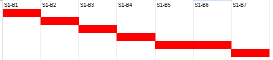Partie 1 — Création et installation de la VM
La première étape du projet a consisté à créer une machine virtuelle et à lancer l’installation d’un système d’exploitation Linux. Le choix s’est porté sur Arch Linux, une distribution légère et personnalisable, adaptée à un environnement serveur.
Démarrage et vérification de la connexion réseau
Démarrage de la machine virtuelle sur l’environnement d’installation d’Arch Linux. Une connexion automatique au compte administrateur root est effectuée afin de pouvoir lancer les commandes nécessaires à l’installation. La connectivité réseau est ensuite vérifiée, pour s’assurer que la machine virtuelle est bien connectée à Internet.
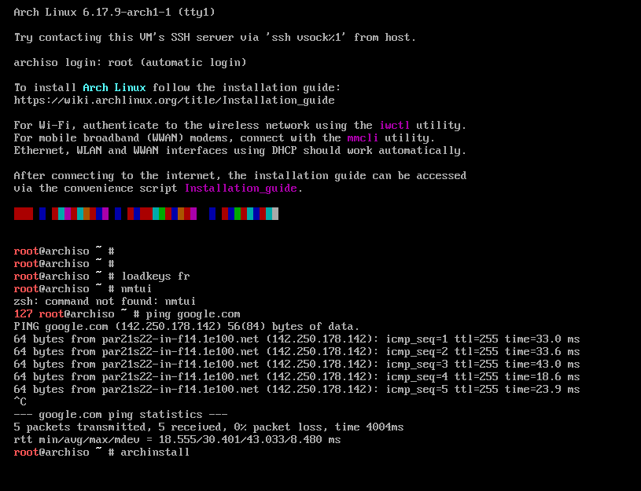Configuration initiale
Définition de différents paramètres comme la langue du clavier, la localisation, le fuseau horaire ou encore les options de base du système.

Partitionnement du disque
Lors de l’installation, le disque de la machine virtuelle a été partitionné afin d’organiser correctement l’espace de stockage. Cette étape permet de séparer les différentes parties du système (racine, fichiers utilisateurs, etc.) et d’assurer une meilleure gestion des données.
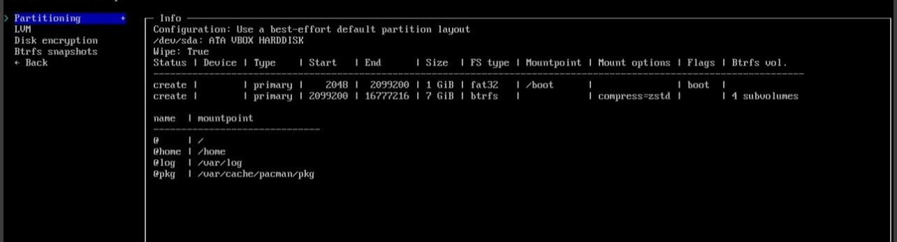Sécurisation du compte administrateur
Un mot de passe a été défini pour le compte administrateur root. Cette étape est essentielle afin de sécuriser l’accès au système et d’éviter toute utilisation non autorisée.
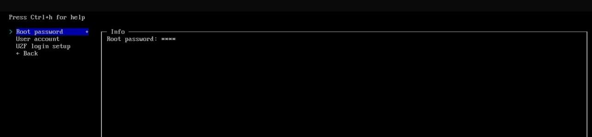Partie 2 — Comptes utilisateurs et administration
Création des comptes utilisateurs
Conformément aux consignes du projet, un compte administrateur ainsi que plusieurs comptes utilisateurs ont été créés. Cette configuration permet de distinguer les rôles et d’éviter l’utilisation permanente du compte root.
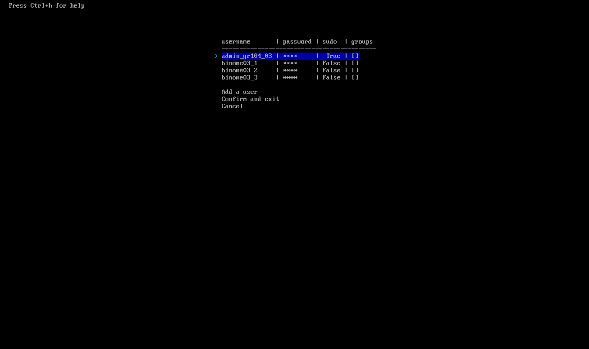Connexion au compte administrateur
Une connexion au compte administrateur a été effectuée afin de vérifier son bon fonctionnement et s’assurer que le compte dispose des droits nécessaires pour administrer le système.
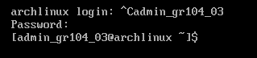Connexion à un compte utilisateur
Une connexion à un compte utilisateur standard a également été réalisée. Cela permet de vérifier que les utilisateurs peuvent se connecter correctement et utiliser le système sans privilèges administrateur.
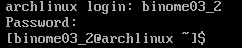Partie 3 — Groupes et permissions
Création du groupe du binôme
Un groupe spécifique a été créé pour le binôme. Ce groupe permet de gérer plus facilement les permissions et les droits d’accès des utilisateurs travaillant ensemble sur le projet.
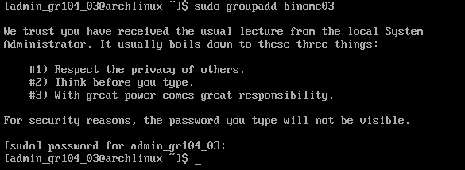Ajout des utilisateurs au groupe
Les différents utilisateurs du binôme ont été ajoutés au groupe créé à l’aide de commandes Linux, ce qui permet de centraliser la gestion des permissions et de faciliter le travail collaboratif.
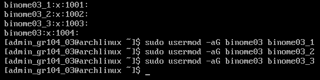Vérification de l’ajout au groupe
Une vérification a été effectuée afin de s’assurer que tous les utilisateurs ont bien été ajoutés au groupe du binôme. Cela confirme que la configuration des groupes a été réalisée correctement.
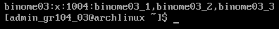Partie 4 — Installation et configuration du serveur web
Installation du serveur web Apache
Installation du serveur web Apache afin d’héberger le site web sur la machine virtuelle.
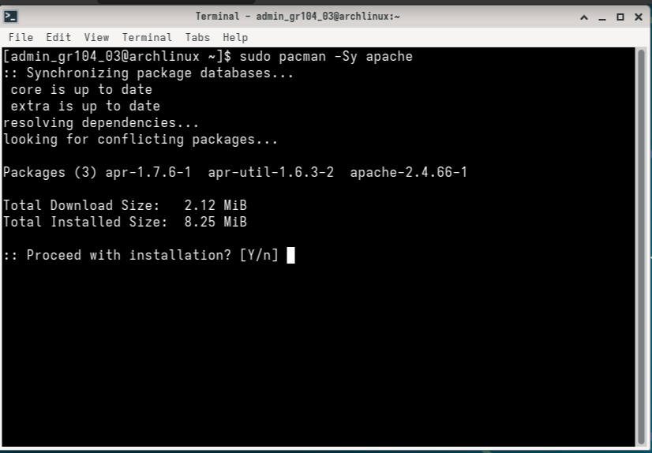Accès et préparation de la configuration
Les fichiers de configuration d’Apache ont été consultés et modifiés afin d’adapter le serveur aux besoins du projet. Un répertoire spécifique a été créé pour héberger le site web, et les permissions ont été configurées pour permettre l’accès aux fichiers.
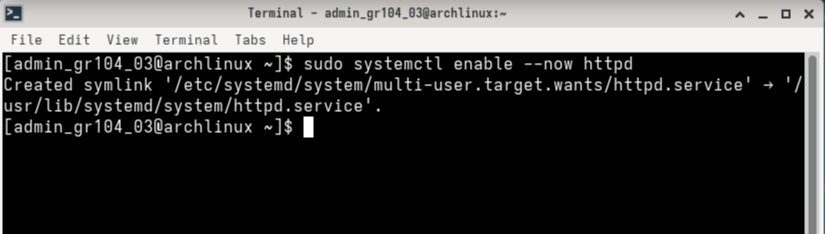Activation des Virtual Hosts
Le fichier de configuration des Virtual Hosts est activé dans Apache. Cela permet à Apache de gérer plusieurs sites ou configurations différentes à partir de fichiers dédiés.
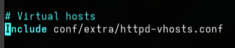Ouverture du fichier de configuration
Ouverture du fichier de configuration des Virtual Hosts à l’aide d’un éditeur de texte en mode administrateur. Cette étape permet de modifier les paramètres du serveur web, notamment le dossier contenant le site.
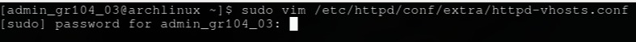Configuration du DocumentRoot
Le paramètre DocumentRoot indique le répertoire dans lequel se trouvent les fichiers du site web. Les permissions sont également configurées afin d’autoriser l’accès aux fichiers et d’assurer le bon fonctionnement du site.

Vérification de la configuration
Une commande de vérification est utilisée afin de s’assurer que la configuration Apache est correcte et ne contient pas d’erreurs, ce qui évite des problèmes lors du démarrage du serveur web.
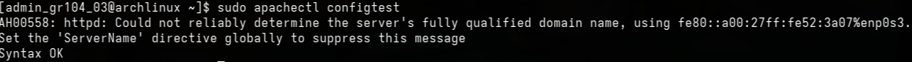Création du répertoire du site
Création du répertoire destiné à accueillir les fichiers du site web. Ce dossier correspond au chemin défini dans la configuration Apache et permet au serveur d’accéder aux fichiers HTML et CSS du projet.
Démarrage et lancement automatique du service
Le service Apache a été démarré afin de rendre le site accessible immédiatement. Il a également été configuré pour se lancer automatiquement au démarrage de la machine virtuelle.
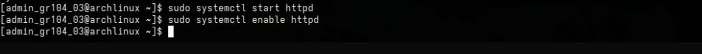Permissions sur les répertoires
Les permissions des répertoires utilisés par le serveur web ont été configurées. Les droits d’accès ont été définis pour permettre au serveur Apache de lire les fichiers du site, tout en limitant les droits d’écriture pour des raisons de sécurité.
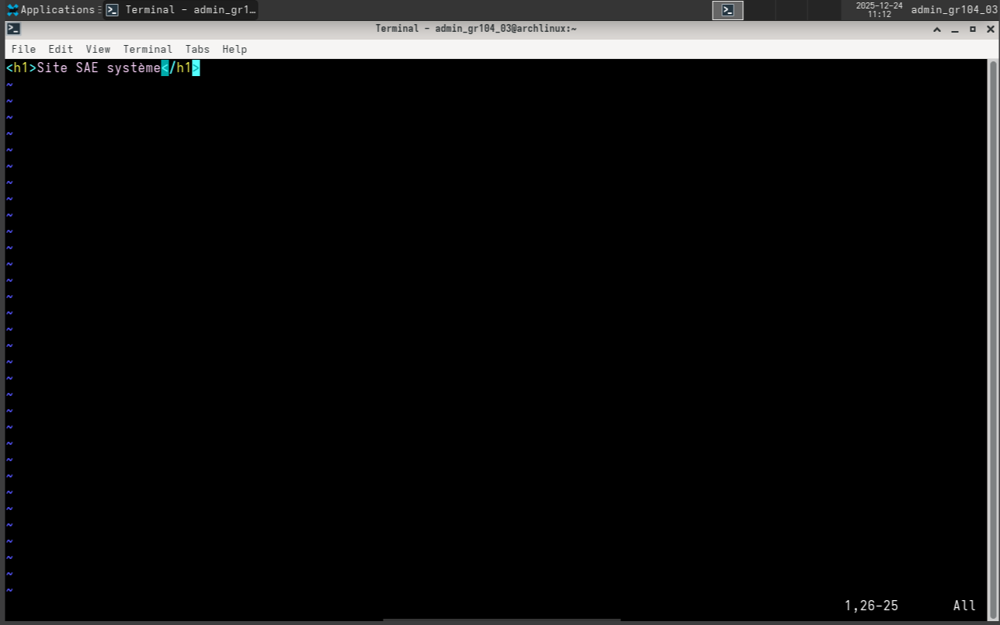Permissions sur les fichiers
Configuration des permissions appliquées aux fichiers du site web, notamment au fichier principal index.html.
Les droits sont réglés afin d’autoriser la lecture par le serveur web tout en protégeant la modification des fichiers.
Activation au démarrage (rappel)
Le service Apache est activé afin de démarrer automatiquement lors du lancement de la machine virtuelle. Le site web reste donc accessible sans intervention manuelle après un redémarrage du système.
Test final : site accessible
Le site web a été testé depuis un navigateur en utilisant l’adresse IP de la machine virtuelle. L’affichage correct confirme que le serveur web Apache fonctionne correctement et que le site est bien hébergé sur la machine virtuelle.